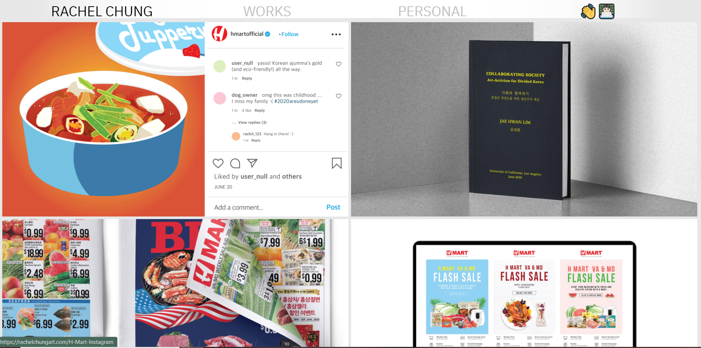
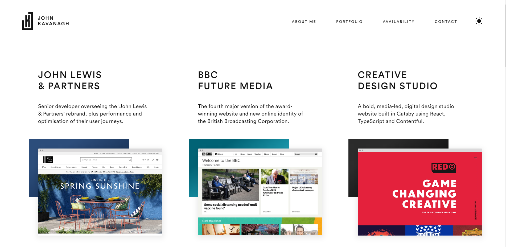
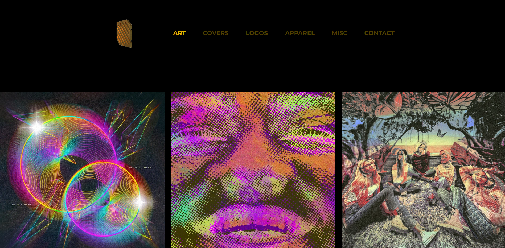
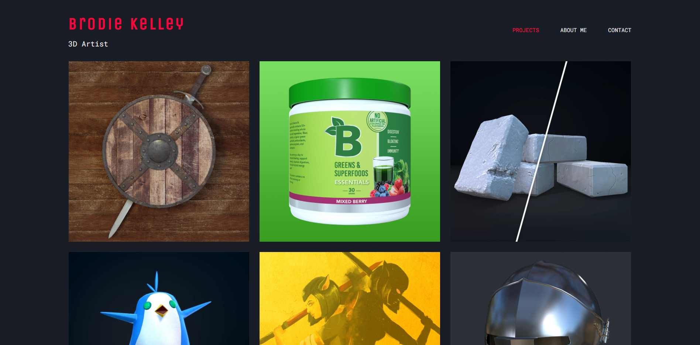

These Portfolios were taken from the r/portfoliocritique subreddit. As such, many of these sites are not yet completed or are works in progress.
Gruyff’s portfolio feels clean, responsive, and interactive. Each section is cleanly laid out, and it’s honestly kind of fun to scroll through the site. While I’m not crazy about the bold, green text that shows up as you open the site, I think it definitely makes a statement and keeps the viewers attention. Overall, the site is laid out well and easy to navigate.
The images in Rachel’s portfolio are large, bold, and pop out at the viewer. However, images also feel a bit large for my taste, and the site feels rather cluttered and a bit confusing to tell what everything is. I do like the originality, creativity, and overall pop of the different artworks, but the size could be toned down a bit, and text feels close, claustrophobic, and clumped at places.
John’s portfolio feels minimalistic, clean, and interactive. While the front page feels relatively calm and almost bare, each project page is big, responsive, and colorful. I love how each tab at the top (minus the portfolio one) has a different color once clicked on to differentiate each page and give it a bit of personality. However, because of the clean look and white background, it also feels somewhat “generic” and similar to other sites I’ve seen in the past.
This portfolio is bold, strong, and big. I love the colors and styles, and I think that the large images work well in this case. When clicking on the different works, I expected a new page to pop up giving some detail, names, or information about each of them. Instead, the images showed up in a full screen menu. I think it would be cool to learn more information about each work when clicking on it. Since this looks more like the start of a store website, I think that makes a bit more sense.
Brodie’s portfolio is clean and easy to navigate. I like how easy it is to tell what each project is, his work on it, and the steps and parts of them. While the site is somewhat simplistic, I think it also works well from an informational standpoint. This might just be me, but the fonts and sizes seem a bit all over the place, so I think that more regulation/less fonts might help it keep a cleaner style.
